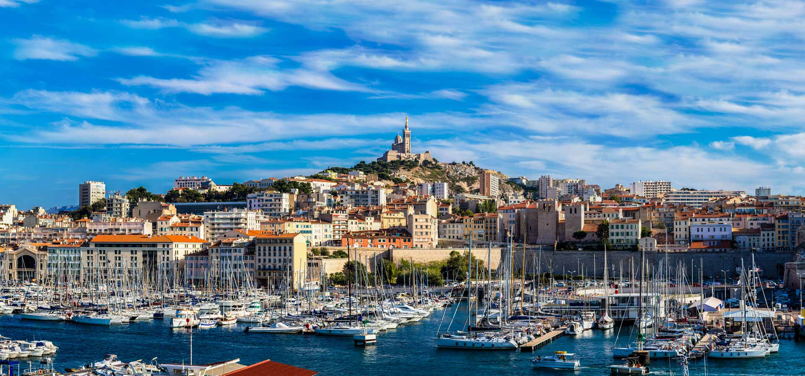

Sur la côte méditerranéenne, aujourd'hui seconde ville de France et centre de la deuxième agglomération, pendant longtemps Marseille ne s'étendit qu'autour du Vieux-Port, où se trouvaient concentrés bateaux et installations portuaires. À la veille de la Révolution, Marseille ne compte encore que 106 000 habitants. Son essor est considérable dans la seconde moitié du xixe s. Le trafic de voyageurs a quant à lui nettement diminué. En 1844, le port déborde du Lacydon et, jusqu'en 1919, de nouveaux bassins s'étendent vers le Nord jusqu'à l'Estaque

Marseille
Après le percement du tunnel ferroviaire de la Nerthe, Marseille se trouve reliée au reste de la France, dont elle devient le grand port colonial. Le développement portuaire se double de celui de l'industrie, où dominent savonnerie, huilerie et métallurgie. La ville atteint 517 000 habitants en 1906. De 1919 à 1963, Marseille annexe progressivement les installations portuaires de l'étang de Berre. Le gouvernement prend alors la décision d'aménager le golfe de Fos. Le port autonome de Marseille s'étend aujourd'hui vers l'Ouest jusqu'à l'embouchure du Rhône et regroupe les bassins de Marseille (bassins Est), de l'étang de Berre, de Lavéra-Caronte, de Port-Saint-Louis-du-Rhône et de Fos (bassins Ouest).
En 2011, le trafic total a été de 88 Mt, plaçant Marseille au premier rang des ports de la Méditerranée et au quatrième rang des ports européens, derrière Rotterdam, Anvers et Hambourg ; dans les entrées, prépondérantes, dominent les hydrocarbures importés de l'Afrique du Nord et du Moyen-Orient (58 millions de tonnes). Le port, en difficulté, est aujourd'hui concurrencé par ceux de Gênes et de Barcelone, notamment pour le trafic des conteneurs.